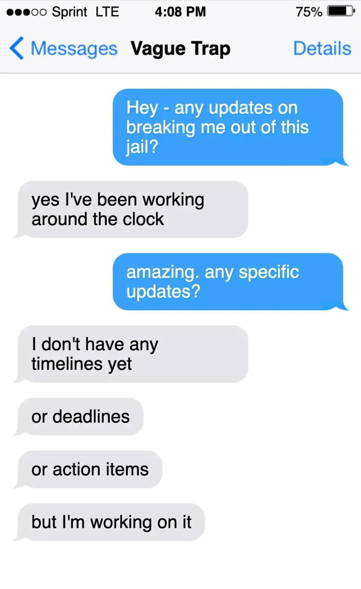
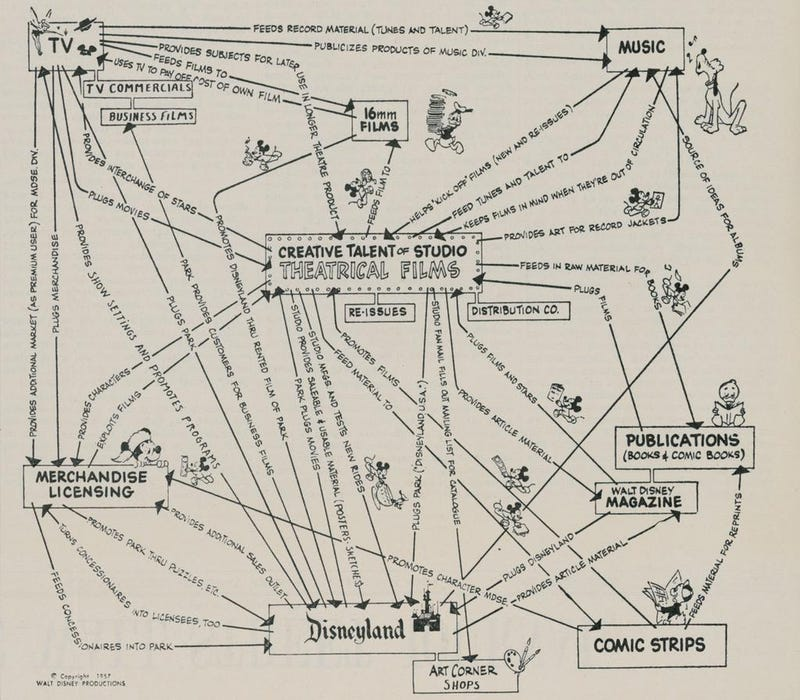

HighAgency.com

High agency nedir?
Bence high agency, 21. yüzyılın belki de en önemli fikri. High agency'yi ilk öğrendiğimde benden saklanmış bir sır gibi gelmişti.
Peki nedir bu? 1964'te Les Amants (Sevgililer) filminin müstehcen içeriği yüzünden yasaklanıp yasaklanmaması tartışılırken ABD Yüksek Mahkemesi yargıcı Potter Stewart'tan pornografiyi tanımlaması istendi. Stewart tarihin en meşhur "tanım olmayan tanımını" yaptı:
"Görünce anlarım."
High agency de o "görünce anlarım" fikirlerinden biri. Bir kere gördün mü, bir daha görmezden gelemezsin. Açıklamadan önce gel önce görelim.
Çevirmen notu: Agency kelimesinin Türkçede birebir karşılığı yok. İnisiyatif, girişkenlik, eyleyicilik, faillik gibi alternatifler var ama hiçbiri tam oturmuyor. Kimi eksik kalıyor, kimi fazla akademik duruyor. Bu yüzden terimi İngilizce bıraktık. Kısaca high agency, hayatın başına gelmesini beklemeyip hayata yön veren insanın özelliği. "Olmaz" denince konuşmayı bitirmek yerine "Peki nasıl olur?" diye düşünmeye başlar. Kapı kapalıysa pencereyi dener, pencere de yoksa duvarı delmenin yolunu arar. Okudukça bu kelime kafanda bir yere oturacak.
Bir Soruda High Agency

Bir üçüncü dünya ülkesinde, bir hapishane hücresinde uyanıyorsun. Seni oradan çıkarması için tanıdığın sadece bir kişiyi arama hakkın var. Kimi ararsın?
Neden bu kişiyi seçtin? Onda seni telefonu açmaya iten şey neydi?
Seçtiğin bu kişide bir şey var. Bir kıvılcım. Tarifi zor bir şey. İşte o "bir şey", high agency.
Bir Meme'de High Agency

Bir Anda High Agency
August Landmesser, Hamburg'daki bir Nazi mitinginde selam vermeyi reddederken.

Bir Anda Low Agency
Bavullara tekerlek takmadan önce Ay'a insan gönderdik (high agency'nin zirvesi). Herkes bavulunu elinde taşıdı, çünkü herkes bavulunu elinde taşıyordu.

Nassim Taleb'den
High Agency İnsanları Nasıl Tanırsın?
Tuhaf ergenlik hobileri: Sosyal baskıya karşı çıkmanın en zor olduğu dönem ergenliktir. Ergenken kalabalığa ters gidebilen biri, yetişkinken de gidebilir.
Koşu bandı enerjisi: Yorgun ve yenilmiş hissederken onlarla buluşursun, odadan çıktığında koşu bandını en dik eğime alıp maraton koşmaya hazırsındır.
Fikirlerini asla tahmin edemezsin: Şiir yazan boksör. Savaş tarihine takıntılı reklamcı. Nietzsche okuyan güzellik kraliçesi. İnançları kalıp yargılarla örtüşmüyorsa, agency'lerini kullanmışlardır.
Göçmen zihniyeti: Memleketinden taşınmışsa bu iyi bir işaret. Ülkesinden taşınmışsa daha da iyi bir işaret. Yanlış yerde olduğunu fark etmek agency ister. Taşınmayı fiilen gerçekleştirmek becerikli olmayı, yeni bir yerde sıfırdan başlamak da gelişim zihniyeti gerektirir.
Sana niş içerikler gönderir: Low agency tuzaklarından biri, bir içeriğin kalitesine karar vermeden önce kaç beğeni aldığına bakmaktır. High agency insanlar sadece içeriğe bakar. Yükselen trendleri çok erken fark ederler.
Yüzüne sert, arkandan iyi: Toplum bizi insanların yüzüne iyi davranıp arkalarından dedikodu yapmaya teşvik eder. Bunun tersini yapmak agency ister, çünkü sosyal akıntıya karşı yüzmek demektir.
Prestijli bir şeyi bırakmıştır: Altın kelepçelerini kırıp stand-up komedyeni olan mutsuz yönetim danışmanı; alışkanlığın ağırlığını, sosyal utancı ve batık maliyet yanılgısını yenmek zorundadır. High agency insan birçok hayat yaşar ve toplumun gözündeki bedeli ne olursa olsun kendini yeniden yaratmaktan korkmaz.
Güvenmezler, doğrularlar: Low agency tuzaklarından biri de sürü düşüncesine kapılmaktır. High agency insanlar gündemdeki fikri kendileri doğrulamadan olduğu gibi kafalarına indirmezler:
- "Diyorlar ki" → Kim diyor?
- "Bilim diyor ki" → Hangi bilim? Birincil kaynakları görebilir miyim?
- "Bu dezenformasyon" → Neye göre? Bunu temel ilkelerden yola çıkarak gösterebilir misin?
Kendi kendine öğrenen makineler: İster en sevdikleri şarkıyı saksafonda çalmayı öğrenmek olsun ister 3D yazıcıların nasıl çalıştığını kurcalamak, sıfırdan başlar ve agency sayesinde bilgi merdivenini tırmanırlar. Tesla, Da Vinci ve Darwin bir şey yapmak için kurumlardan izin istemedi.
Sorunun kendisini sorgularlar: Sorunu cevaplamaya koşmadan önce doğru soru olup olmadığını sorgularlar. Yanlış soruya verilen doğru cevabın, doğru soruya hiç cevap verilmemesinden daha kötü olduğunu bilirler.
Artık gördün. Şimdi açıklamaya çalışalım...
High Agency Yelpazesi
Üçüncü dünya ülkesindeki o hapishane hücresinden arayacağın kişi, tanıdığın en high agency insandır. Çünkü bu, gerçek hayattaki bir sorunun anabolik almış halidir.
Aradığın kişiye gerçek dünyada, elinde hiçbir kılavuz olmadan, tek başına çözmesi imkânsız görünen bir sorun veriyorsun. Ve yine de bir çözüm bulacağına bahse giriyorsun.

Hapishaneden arayabileceğin herkesi tek bir odaya toplasan, o high agency odasındakilerin ortak noktası ne olurdu?
Yaş, cinsiyet, ırk, eğitim, unvan ya da siyasi görüş değil. İyimserlik ya da kötümserlik de değil.
İyimser bardağın yarısının dolu olduğunu söyler. Kötümser yarısının boş olduğunu.
High agency ise senin bir musluk olduğunu söyler. Aynaya baktığında sana dev bir musluk bakar.

O high agency odasındaki herkesin ortak tek büyük özelliği şu: Hayat onların başına gelmez, onlar hayatın başına gelir. Geleceği sabit bir şey olarak görmezler. İnsanların eylemleriyle şekillenecek bir şey olarak görürler.
"Biri sana bir şeyin imkânsız olduğunu söylediğinde bu konuşmanın sonu mu olur, yoksa kafanda ikinci bir konuşma mı başlar? Sana yapamayacağını söyleyen her kimse, onu nasıl aşacağına dair bir konuşma." Eric Weinstein, high agency üzerine.
High agency çok önemli bir fikir, çünkü bir bireyin ya da toplumun agency'si ne kadar yüksekse o kadar çok sorun çözebilir.
High agency'yi anlamak kafa karıştırıcı olabilir, çünkü tek bir fikir değil. Nadiren bir arada bulunan üç ayrı becerinin birleşimi:
- Net düşünmek
- Harekete geçme eğilimi
- Aykırı durabilmek
High agency üç tekerlekli bisiklet gibidir. Tekerleklerden birini çıkarırsan çalışmaz.

Birinin seni üçüncü dünya ülkesindeki bir hapishaneden bu üçü olmadan çıkardığını hayal etmek imkânsız.
Net düşünemiyorsa, aklına gelen ilk kötü plana dalar.
Harekete geçme eğilimi yoksa, fikirlerini teoriden gerçek dünyaya asla taşıyamaz.
Aykırı duramıyorsa, yetkili biri "Hayır" dediğinde pes eder ve uyum sağlar.
Sende agency var mı?
Belki sen de benim gibi merak ediyorsundur: Bende agency var mı? Hapishaneye düşseler arkadaşlarım beni arar mı?
Kötü haber: Çoğumuzun varsayılan ayarı low agency.
Avcı-toplayıcı kabilelerin kıtlığına göre evrilmiş bir beyni miras aldın. Sonra da sanayi devrimine fabrika işçisi yetiştirmek için tasarlanmış bir eğitim sisteminden geçtin. Varsayılan ayarlarının high agency olmasını mı bekliyorsun?
İyi haber: Ne kadar agency sahibi olacağın da senin elinde.
Sayısız tarihi örneğin gösterdiği gibi, high agency yelpazesinde yukarı çıkmak mümkün. Bu yazının amacı da tam olarak bu. Seni, bir arkadaşının hapishanedeyken arayacağı o sorun çözme makinesine biraz daha yaklaştırmak.

Yazı dört bölümden oluşuyor:
1. High Agency Yazılımı: Beş satırlık basit high agency kodu.
2. Yaşamış En High Agency İnsan? Belki de gelmiş geçmiş en high agency insanın hikâyesi.
3. Low Agency Tuzaklarından Kaçmak: İnsanların en sık takıldığı 5 low agency tuzağı ve olası kaçış yolları.
4. Palavrayı Gerçeğe Dönüştürmek: Agency'ni bugünden kullanmaya başlamak için pratik bir teknik.
Bu yazı, 30 yaşında yazmak yerine keşke 18 yaşında okusaydım dediğim yazı.
Hadi high agency tavşan deliğinden aşağı inelim.


1. Bölüm: High Agency Yazılımı
High agency yelpazesinde yukarılarda olan insanlar dünya görüşlerini başkalarından öylece indirip kurmazlar.
Yine de birçoğu, birbirinden habersiz, kafasına birbirine çok benzeyen beş satırlık bir yazılım yüklemiştir:
1. Çözülemeyen sorun yoktur
İnsan beyni bir soru cevaplama makinesidir. Ona "Hayatımda iyi giden ne var?" diye sorarsan cevap bulur. "Hayatımda kötü giden ne var?" diye sorarsan da cevap bulur.
Bir sorunla karşılaştığında beynine şunu sor: "Bu, fizik yasalarına aykırı mı?" Cevap "Hayır" olacak ve beynin, bunun nasıl mümkün olabileceğine dair akla hayale gelmedik yollar üretmeye başlayacak. Bu soru, zihnindeki tahtada o sorunla ilgili ne yazıyorsa siler ve uyuyan yaratıcılığının kapısını çalar.
Sorunun fizik yasalarına aykırı değilse, başkaları ne derse desin, çözülemez bir sorun değildir.
Bir kumarhanede olduğunu ve bir rulet masasına baktığını düşün.
Önüne şöyle bir sorun konuyor: Kasayı yenmen gerekiyor.

"Bu imkânsız. Rulet bir şans oyunu, beceri oyunu değil" diyebilirsin.
Ama bu sorun fizik yasalarına aykırı mı? Termodinamik yasalarını çiğnemen mi gerekiyor? Newton'un hareket yasalarını mı yıkman gerekiyor?
1961'de Claude Shannon ve Ed Thorp, ruleti hacklemenin fizik yasalarına aykırı olmadığına karar verdiler. Demek ki çözülebilir bir sorundu.
Ruleti hacklemek için tarihteki ilk giyilebilir bilgisayarı yaptılar. Cihaz, ayakkabının içine yerleştirdikleri sigara paketi büyüklüğünde bir kutu aracılığıyla rulet çarkıyla ilgili bilgi aktarıyordu. Shannon ve Thorp, ayak parmaklarıyla kullandıkları bir düğme sayesinde topun hızını ve çarkın dönüşünü sisteme giriyor, topun düşeceği bölgeyi tahmin ediyorlardı. Kazanma ihtimallerini %44 artırdılar ve kasayı alt ettiler.

Bir sorun fizik yasalarına aykırı değilse, insanın agency'si işin içine girdiği için, birinin o sorunu çözüp çözemeyeceğine dair kesin bir ihtimal biçemezsin.
David Deutsch bunu, bir yıl sonra Dünya'ya çarpacak bir asteroit örneğiyle anlatır. Eğer bu tehdide karşı ne yapılacağına penguenler karar veriyor olsaydı, asteroidin fiziğine bakarak Dünya'nın başına ne geleceğini kesin olasılıklarla hesaplayabilirdin. Ama karar insanların elindeyse kesin bir olasılık hesaplamak imkânsızdır.
Dünya'nın yok olacağını pasif bir şekilde kabullenen low agency yolu seçersek, yok olma ihtimali artar. Asteroitleri gökyüzünde paramparça edecek lazer ışınları inşa etmek gibi high agency yolu seçersek, yok olma ihtimali azalır.

2. Tek bir doğru yol yoktur
Tenis tarihinde çok özel bir dönem yaşandı: Tüm zamanların en iyi üç oyuncusu tam olarak aynı dönemde yarıştı. Nadal. Djokovic. Federer.
Matthew Syed, Wimbledon öncesinde onları ısınırken izlediği anı çok güzel anlatır.

Nadal ısınırken saf bir saldırganlık vardı. Üstüne cin girmiş gibi bir aşağı bir yukarı depar atıyor, tişörtünden ter damlıyordu.
Djokovic ısınırken duygudan tamamen arınmış bir ayar çekme hali vardı. Her vuruşu ölçülü ve bilimseldi.
Federer ısınırken ise daha kortta görünmeden kıkırdadığını duyabiliyordun. Hünerli vuruşlar deniyor, topu adeta okşuyor, kendi yaratıcılığının peşine düşüyordu.
Üçünün de uyduğu tek bir "doğru yol" yoktu. Tek ortak noktaları, kendilerine neyin işe yaradığını bulup onu yapmalarıydı.
Benzer bir hikâyede efsanevi müzisyenler Leonard Cohen ve Bob Dylan, Paris'te bir kafede oturuyorlardı:

Bob Dylan, Cohen'e sorar: "Hallelujah'ı yazman ne kadar sürdü?"
Cohen cevap verir: "Birkaç yıl."
Yalandı. Aslında 7 yıl sürmüştü ama bunu küçümser gibi söylemek istemişti.
Sonra Cohen, Bob Dylan'a sorar: "Peki senin Just Like a Woman'ı yazman ne kadar sürdü?"
Dylan cevap verir: "On beş dakika."
3. "Büyükler" diye bir şey yoktur
Low agency düşüncenin altını yeterince kazırsan, çoğu zaman kendilerinden üstün, tanrı gibi bir "büyükler" sınıfına duyulan inançla karşılaşırsın. Çocukluktan kalma, zamanda donup kalmış bir Peter Pan gerçeklik algısıdır bu. Noel Baba'ya ve Diş Perisi'ne olan hayali inançlar zamanla düzeltilmiştir ama dünyayı yöneten kusursuz bir yetişkinler grubuna olan inanç hâlâ yerinde durur.
Bu "büyükleri" bir kaide üstüne koymak, bir low agency tuzağıdır. Kusurlu insanları üstün bir tanrılar sınıfına dönüştürmek demektir.
Kahramanlarınla tanışırsan ya da biyografilerini okursan, Süpermen'in çoğu zaman aslında Clark Kent olduğunu keşfedersin. Bu kusurlu insanı o kusursuz kaideye oturtan, zihnindeki film stüdyosudur.
En büyükler bile son derece insandı:
Steve Jobs, pankreas kanseri tedavisini dokuz ay boyunca erteleyip havuç suyu diyetine ve akupunktura yöneldi.

Mozart kazandığından fazlasını harcadı, borç dağlarının altında perişan bir hayat yaşadı ve arkadaşlarına sürekli para dilenen mektuplar yazdı.

Isaac Newton hayatının otuz yılını simya üzerine 1 milyon kelime yazarak geçirdi. (Mirasçıları yayımlamaktan utandıkları için bu yazılar yıllarca saklandı.)

Napolyon'un şiddetli basuru (evet, kıçındaki şişlikten bahsediyoruz) ona Waterloo Savaşı'nı kaybettirmiş olabilir. Acısı o kadar büyüktü ki savaş alanını gözden geçirmek için atının üstünde oturamıyordu. İlk karısına da şu talimatı vermişti: "Üç gün içinde evdeyim. Yıkanma."

Friedrich Nietzsche, takıntılı olduğu bir kıza evlenme teklif etti, reddedildi ve hayatının geri kalanını küskün ve yalnız geçirdi. Üstelik hayattayken eserlerinin yalnızca üç yüz kopya sattığını gördü.

Henry Ford, The Dearborn Independent gazetesini satın aldı ve 91 hafta boyunca "Uluslararası Yahudi: Dünyanın En Büyük Sorunu" başlıklı bir kampanya yayımladı.

Martin Luther King, birçok farklı kadınla evlilik dışı ilişki yaşadı.

Nikola Tesla'nın, rivayete göre, bir güvercine âşık olduğu söylenir: "O güvercini bir erkeğin bir kadını sevdiği gibi seviyorum, o da beni seviyor."

Fyodor Dostoyevski sahip olduğu her şeyi kumarda kaybetti. Bu alışkanlığını finanse etmek için insafsız yayın sözleşmelerine imza attı ve yetiştirmesi imkânsız teslim tarihlerini kabul etti. Karısı, çocuklarını doyurabilmek için alyansını ve kişisel eşyalarını rehine vermek zorunda kaldı.

Hiçbir yetişkini kaideye koyma. Gurularını öldür. Çok daha işine yarayacak bir inanç şu: O "büyükler" seni kurtarmaya gelmeyecek. Çünkü öyle biri yok.
4. Normal diye bir şey yoktur
High agency'nin en büyük katillerinden biri, normal olma isteğidir: Uyum sağlamak ve başkaları tarafından sevilmek.
Normallik paradoksu şu: Kabile bizi sevsin diye tuhaflıklarımızı saklar, "normal" davranırız. Ama kabile o normal davranışları unutur.
Normal davranış kısa vadede sana hiçbir şeye mal olmaz ama hafızanın dipsiz kuyusunda kaybolup gider. Alışılmışın dışındaki tuhaf davranışın kısa vadede bir bedeli vardır, ama o davranışlar gelecekte anlatılacak hikâyeler olarak yaşamaya devam eder. Birer hikâye sermayesine dönüşür.
Masadaki herkesin hesabını ödersen, kısa vadede tepki şaşkınlık ve kafa karışıklığı olur. Uzun vadede ise herkesin seninle ilgili en sevdiği anı olur.
Bir arkadaşının doğum günü için dünyanın öbür ucuna gidersen, arkadaşının ilk tepkisi "Hiç gerek yoktu" olur. Ama senin düğününde anlattığı hikâye tam da bu olur.
İnsanların iş fikirleri hakkında %100 dürüst geri bildirim verirsen, kısa vadede tepki öfke olur. Uzun vadede ise güvendikleri sayılı insandan biri olursun.
Değer verdiğin insanların cenazelerine git. Oralarda o normal, mantıklı davranışlardan hiç bahsedilmez. Cenazeler o insanın tuhaf ve komik hikâyeleriyle dolar. İnsan davranışının ortalamasından sıyrılıp kendi benzersizliğini gösterdiği anlarla.
Kabile seni sevsin diye tuhaf bireyselliğini saklıyorsan şunu unutma: Yaptığın ya da söylediğin her şeyi yakında unutacaklar.

Normal unutulur. Sadece tuhaf olan hayatta kalır.
5. Sadece şimdi var
Geçmiş artık yok. O sadece şimdinin içinde beliren bir anı. Gelecek de henüz yok. O da şimdinin içinde beliren, gelecekteki bir şimdinin hayali. Hayat, art arda gelen şimdilerden ibaret.
Tik tak. Tik tak. Saati duyuyor musun? Bir şimdi daha geçip gitti. Bir tane daha.

Sınırlı sayıda şimdin var. Film yönetmeni Kevin Smith, hayatını kurallara göre yaşamış babasının hikâyesini anlatır:
"Babam iyi bir adamdı. Dünyada çok fazla iyi adam yok ama o gerçekten iyi bir adamdı. Yıllarca bir postanede çalıştı, pulları damgaladı. Ne kadar ruhu öldüren, berbat bir iş. Sırf ailesini geçindirmek için. Kim bilir, belki onun da hayalleri vardı?...
Sabah 6'da kardeşimden bir telefon geldi. Hemen Walnut Caddesi'ndeki hastaneye gelmemi söyledi… Acil servise vardım, kapıyı açtım ve ilk gördüğüm şey annemdi. Hayatımda hiçbir insanı o kadar korkmuş görmemiştim. Yüzünde dehşet vardı. Annemin ağladığını daha önce de görmüştüm… Bu farklıydı. Dehşet, korku… Sanki kafasına silah dayanmış gibiydi. Kardeşime baktım, o da yavaşça başını salladı. Bu, babamın gittiği anlamına geliyordu.
Sonra kardeşim, muhtemelen hayatımı belirleyen o cümleyi söyledi: "Çığlık çığlığa öldü."
İnanamadım. Mecazen mi söylediğini sordum, hayır dedi, kelimenin tam anlamıyla çığlık atarak ölmüş. Kardeşimin bunu aklından atamadığı belliydi. Babam hiç de yumuşak bir adam değildi ama sesini gerçekten yükselttiğini hiç duymamıştım. Babamın çığlık çığlığa ölmüş olması fikri hayatımı değiştirdi. Anladım ki bu dünyada iyi bir adam bile, oyunu dürüstçe oynayan, kurallara uyan, yapması gereken her şeyi yapan biri bile, sonunda çığlık çığlığa ölebiliyor. İşte o noktada, ne kadar saçma olursa olsun, sahip olduğum her aptal hayali gerçekleştirmeye çalışmamanın hiçbir anlamı olmadığına karar verdim… Hepsinin peşinden koş, hepsini yap. Çünkü hepimiz çığlık çığlığa öleceğiz, o yüzden burada varken tadını çıkarsan iyi olur."
Çığlık çığlığa ölmeyeceğinin bile bir garantisi yok.
Sadece şimdi var.
High agency yazılımını kafasına yüklemiş biri: Yaşamış en high agency insan...

2. Bölüm: Yaşamış En High Agency İnsan?
Karşında Wilbur.

Yıl 1885. Wilbur 18 yaşında. Onu seven bir anne babanın yanında harika bir çocukluk geçirmiş, önünde Yale Üniversitesi'nde parlak bir gelecek var.

Sonra ayaz bir kış öğleden sonrası, doktor reçetesiyle kokain kullanan (o zamanlar yaygın bir tıbbi uygulamaydı) mahalleden bir psikopat, psikopatların yaptığını yapmaya karar verdi: Wilbur'un yüzünü hokey sopasıyla dağıttı.
Kokainle kafayı bulmuş bu psikopat gelip özür falan dilemedi. Onun yerine bir seri katile dönüştü ve kendi ailesini öldürdü.
Wilbur yıllarca yatağa bağlı kaldı. Sinir sistemi sorunları, depresyon, kalp çarpıntıları... Yale hayalleri suya düştü.
Hayat Wilbur'un başına geliyordu.

Üstelik Wilbur'un annesi de ölümcül bir hastalığa yakalanmıştı. Wilbur, ölmekte olan annesinin bakımıyla yatağında yatmadığı zamanlarda, hastalığın annesini yavaş yavaş öldürüşünü çaresizce izliyordu.

O dönemde Wilbur'u ziyaret etsen muhtemelen şu sonuca varırdın: "Wilbur aklını kaçırmış."
Wilbur, yaşıtı gençlerin yaptığı normal şeyleri yapmıyordu. Kızlarla çıkmaya çalışmıyor, mahalledeki maçlara gitmiyordu.
Onun yerine Wilbur... kuşlara takmıştı.
Kazanın beyninde bıraktığı bir hasar mıydı bu? Yoksa annesinin hastalığına karşı bir savunma mekanizması mı?
Hayır. Wilbur büyük bir high agency sorusunun peşine düşmüştü: Kuşlar uçabiliyorsa, insanlar neden uçamasın?
Bugünden geriye bakan tarihçi gözlüğünü bir kenara bırak ve Wilbur'un yaşadığı âna girmeye çalış. O zamanlar uçmaya çalışmak, ölmeye can atan delilerin işi olarak görülüyordu.
New York Times bir makale bile yayımlamıştı: "İnsanoğlu bir milyon yıl daha uçamayacak."

Uçmak çözülemez bir sorun olarak görülüyordu. Şüpheciler o güne kadarki yüzde sıfırlık başarı oranını gösteriyordu. Yeterince uzun süre deneyen herkes ölmüştü.
Wilbur hasta yatağından inanılmaz bir azimle yol yordam aradı. Unutma, yıl 1890'lar. Ne Google var, ne YouTube'da ders videoları, ne de havacılık mühendisliği kitapları. Ülkenin dört bir yanındaki kütüphanelere mektup yazıp kuşlar, fizik ve mekanik üzerine gönderebilecekleri ne kitap varsa istedi.
Wilbur şu sonuca vardı:
- Kuşlar uçabiliyor.
- O hâlde uçmak fizik kurallarına aykırı değil.
- O hâlde insanlar uçabilir.
- O hâlde Wilbur da uçabilir.
Wilbur high agency yelpazesinde yukarı tırmanıyordu.

Wilbur bu fikrini kardeşi Orville'le paylaştı. Wilbur ve Orville, hayali teoriler diyarında yaşamak yerine harekete geçme eğilimindeydi: "Hadi garajda gerçek boyutlu planörler yapmaya başlayalım."
Önlerinde toplumun çözülemez dediği sayısız sorun bekliyordu. Ama Wilbur ve Orville bu sorunların hiçbirinin fizik kurallarına aykırı olmadığını keşfetti:
Sorun 1: Uçmak için yanlış yerde yaşıyorlardı
Tersine mühendislikle hesap yaptılar: Saatte 15 mil (yaklaşık 24 km) hızında rüzgâra ve yumuşak iniş için kum tepelerine ihtiyaçları vardı. Ohio'da ikisi de yoktu. Tekrar hatırlatayım: Daha internet yok. Böyle bir yeri Google Maps'ten bulmak gibi bir şansları yoktu.
Çözüm: Meteoroloji Bürosu'yla iletişime geçip verileri istediler. Amerika'daki her bir yerin verilerini tek tek inceleyip temel ilkelerden yola çıkarak cevabı buldular: Uçmak için en uygun hava Kuzey Carolina'daki Kitty Hawk'taydı.

Sorun 2: Kitty Hawk evden 700 mil (yaklaşık 1.100 km) uzaktaydı
Wilbur ve Orville daha önce memleketlerinden hiç çıkmamıştı. Ülkenin öbür ucuna şıp diye gidivermek için sabah 10 uçağı da henüz yoktu tabii.
Çözüm: Kara kara düşünmek yok. Sadece harekete geçme eğilimi. Planörleri topladılar, günlerce trenle yol gittiler ve kum tepelerine çadır kurdular.
Şöyle bir düşün. Kitty Hawk'ta yaşayan John adında bir çiftçisin. Köpeğinle her zamanki gibi tarlaların etrafında yürüyüşe çıkmışsın ve şu manzarayla karşılaşıyorsun: Uzak mı uzak bir şehirden gelmiş iki kardeş, bir çadırda yaşıyor ve bütün gününü martı taklidi yapıp şunu yaparak geçiriyor:
Yerliler Wilbur ve Orville'e "iki zavallı kaçık" lakabını taktı.
Sorun 3: Uçağı havada kontrol etmek
Çözüm: Uçuş sırasında kanadın şeklini değiştirmek için kanat bükme sistemini kuşlardan çaldılar. Evde yaptıkları rüzgâr tünelinde 200 farklı kanat şeklini test ederek aerodinamik bilgisini sıfırdan yeniden kurdular (aşağıda).


Sorun 4: Var olan bütün motorlar yerden kalkamayacak kadar ağırdı
Çözüm: Tam olarak nasıl bir motora ihtiyaçları olduğunu hesapladılar ve onu kendileri yaptılar: Sadece 180 libre (yaklaşık 82 kg) ağırlığında, özel yapım bir alüminyum motor.

Wilbur çözülemez sorunları çözerek high agency yelpazesinde yıldırım hızıyla ilerliyordu.

Dört yıllık yol acımasızdı: Deneme planörleri düştü. Hesaplar tutmadı. Malzemeler kırıldı. Hava çoğu zaman izin vermedi. Yerliler uzaktan izleyip kuş taklidi yaparak intihara kalkışan bu tuhaf adamlara kafa sallıyordu.
Bir gün Wilbur dibe vurdu. Orville'e dönüp şöyle dedi: "İnsanoğlu bin yıl geçse de uçamayacak."

Bu sözleri söylediği günün ertesi sabahı yine yeni bir tasarım çiziyordu.
Ve bir gün, 17 Aralık 1903'te... Wilbur ve Orville, kuş olmayıp da uçan ilk canlılar oldu.
O günün en uzun uçuşu Wilbur'unkiydi: 59 saniyede 582 fit (yaklaşık 177 metre).
Wilbur o kadar high agency'ydi ki "hayatın başına gelmek" çeyreğinin bile dışına uçtu.

Mahallenin psikopatının yüzünü dağıttığı, ölmekte olan annesine bakarken yatağa mahkûm kalmış bir gençten, ilk uçağı yapıp uçuran adama. Hem de New York Times manşetlerinin "İnsanoğlu bir milyon yıldan önce uçamayacak" demesinden sadece aylar sonra.
Geçen yıl uçaklarda 5,58 milyar yolcu koltuğu uçtu. Ve hepsi, bir sahilde kuş taklidi yapan "iki kaçık" ile başladı.
Wilbur Wright yaşamış en high agency insan olabilir.

Üçüncü dünya ülkesinde bir hapishaneye düşsen, Wilbur'u arardın:

Peki dünyada nasıl daha çok Wilbur Wright, daha az şüpheci New York Times manşeti olur?
Low agency tuzaklarından kaçarak...

Bölüm 3 - Low Agency Tuzaklarından Kaçmak
Low agency'nin kök nedenlerini bulmak için high agency bisikletini ters çevirmen yeterli:

Ve low agency her yerde.
Low agency, YouTube'da bir saat arasan çözülecek bir sorunda farkında bile olmadan yıllarca takılı kalmaktır.

Low agency, çocukluk arkadaşını aramaya "vakit bulamamak" ve bir gün aniden hayatını kaybettiğini söyleyen o telefonu almaktır.

Low agency, sosyal ortamlarda kim olduğuna odadakilerin ortalama fikrinin karar vermesine izin vermektir.

Low agency'nin zihinde bir hapishane gibi çalışan bir dizi tuzağı var. Üçüncü dünya ülkesindeki hapishanenin aksine burada ne gardiyan var ne duvar. Hatta bunlar fiziksel gerçeklikte hiç yok.
Bir low agency tuzağına sıkıştıysan o hücrenin hem gardiyanı hem de mahkûmu sensin. Kendi kendine kurduğun bu hapishane, tamamen hayal gücünün gerçekliği nasıl çerçevelediğinde var.
Sayısız low agency tuzağı olabilir. Ben en sık karşılaşılan beşini ve olası kaçış planlarını sıraladım.
1. Belirsizlik Tuzağı
Üçüncü dünya ülkesindeki bir hapishane hücresinde olsan ve belirsizlik tuzağındaki birine yardım için mesaj atsan, sana şöyle cevap verirdi:

Belirsizlik tuzağı, sorunu asla tanımlamayarak agency'den kaçar; çözümü tanımlamayı hiç sorma. Bulanık, havada kalan düşüncelerle yaşar.
Belirsizlik tuzağındaki insan çoğu zaman saatlerce düşünür, ama bir kere bile net düşünmez. Ortalama bir insanın aklından günde 10 ile 60 bin arası düşünce geçer. Dünkü düşüncelerinden bir tanesini bile net hatırlayabiliyor musun?
Düşünceler o an çok gerçek gelir, sonra hafızanın dipsiz kuyusunda kaybolur gider. Çoğu düşünce düzgün bir cümle bile değildir. Bilincinin içinde rastgele bir Tumblr sayfası gibi zıplayıp duran duygusal GIF'ler, JPEG'ler ve yarım yamalak komutlardan ibarettir.
Belirsizlik Tuzağından Kaçış Yolu: Sorunu basit kelimelerle kafandan dışarı çıkararak tanımla
Düşüncelerini yaz. Sorunun resmini çiz. Beyaz tahta kullan. Bir tablo oluştur. Akıllı biriyle sesli sesli konuş. Aklında belirli bir soruyla yürüyüşe ya da koşuya çık.
Düşünceyi kafandan çıkarıp başka bir ortama aktarmak bir filtre gibi çalışır ve düşüncendeki bulanık çamuru süzer.
Düşüncelerini kafandan her dışarı çıkardığında, sorunları ve çözümleri mümkün olan en basit, en net, en somut dille ifade etmeye çalış.
Bunu yaparken şunu unutma: Belirsizlik tuzağı çoğu zaman belirsiz sorulardan doğar.
Belirsiz soru: Hangi mesleği seçmeliyim?
Somut soru: Hayalimdeki hafta saat saat nasıl görünüyor? Kâbusum olan hafta saat saat nasıl görünüyor? Şu anki haftamla hayalimdeki ve kâbusumdaki hafta arasında ne kadar fark var?
Walt Disney düşüncelerini kafasından çıkarıp kâğıda döküyor. Disney imparatorluğunun haritası:

Christopher Nolan'ın Başlangıç (Inception) filminin olay örgüsünü anlatan çizimi:

2. Orta Zekâ Tuzağı

Orta zekâ tuzağı agency'yi gereksiz yere karmaşıklaştırır. Adını internetteki meşhur "midwit" meme'inden alıyor: Ortada duran o korkulan orta zekâlı adam.

Soldaki adam basit adımları karmaşıklaştıracak kadar akıllı değil. Sağdaki adam ise karmaşıklığı azaltıp basit adımlara odaklanacak kadar akıllı. Ortadaki orta zekâlı adam ise tehlike bölgesinde yaşıyor ve basitliği aptallıkla karıştırıyor.
Soldaki daha az zeki adamın agency'si çoğu zaman ortadakinden daha yüksektir, çünkü kendini kandıracak kadar beyin gücü yoktur.
Orta Zekâ Tuzağından Kaçış Yolu: Soldaki adam ne yapardı? Bunu tersine çevirerek bul.
1. Adım - Sağdaki adam olmaya çalışmayı bırak: Orta zekâlının hatası, sağdaki akıllı adam olmaya çalışmaktır.
2. Adım - Soldaki adam ol: Basit fikirleri tersine çevirerek bul. Sorunu ters yüz et. Ve herhangi bir karmaşıklık eklemeden önce bu basit fikirleri ciddiye al.
Örneğin: "Daha iyi bir yazar olmak istiyorum."
Orta zekâlı adam, yazarların kahve içme rutinlerini incelemeye ya da kelime sayısını artıracak mükemmel klavyeyi araştırmaya başlar. Bunun yerine kendine şunu sor: Daha kötü bir yazar olmayı nasıl garantilerdim?
- Hiç yazmam
- Düzensiz yazarım
- Sıkıcı bulduğum konular hakkında yazarım
Bunları tersine çevir, soldaki adamın aklına gelecek basit fikirleri bulmuş olursun:
- Yaz
- Düzenli yaz
- Seni heyecanlandıran konular hakkında yaz
3. Saplantı Tuzağı

Saplantı tuzağındaki kişi, geçmişteki varsayımlarına öyle saplanmıştır ki yeni high agency seçeneklerini göremez. Elinde çekiç olana her şey çivi gibi görünür derler ya, işte o adama dönüşürsün.
Zihni en çok değiştiren üç uyuşturucu: DMT, meth ve momentum.
Bu hapishanenin kök nedeni "son ilkelerden düşünmek", yani temel ilkelerden düşünmenin tam tersi. Zihnin gerçekliğe dair bazı varsayımlar edinir, bunları sorgulanamaz gerçekler gibi kabul eder ve sonra varsayımları bir kez bile sorgulamadan onları destekleyecek kanıtlar aramaya başlar.

Saplantı Tuzağından Kaçış Yolu: 10 kat daha fazla agency'm olsaydı ne yapardım?

Nick'in bu sorusu zihnine bir temel ilkeler bombası atar. Seni geçmişin varsayımlarından arınmış, taze bir bakış açısıyla soruna baştan başlamaya zorlar. Çoğu zaman asıl sorunun sorunun kendisi olmadığını fark edersin. Asıl sorun, soruna baktığın varsayımlardır.
Diyelim ki kapıdaki güvenlik bu gece içeri giremeyeceğini söyledi. Bu sözü kesin hüküm gibi kabul edebilirsin ya da kendine şunu sorabilirsin: 10 kat daha fazla agency'm olsaydı ne yapardım? Ve kafanda yaratıcı fikirlerin nasıl patladığını izlersin. Güvenliğe rüşvet verebilirsin, arka kapıdan girebilirsin, mekânın sahibine ulaşabilirsin, yeni bir kıyafetle kılık değiştirebilirsin, arkadaşlarına koca bir kamera ekibi getirtip A sınıfı bir ünlünün kapıdan çevrildiği anı çeken TMZ (ünlü bir Amerikan magazin sitesi) ekibiymiş gibi yapabilirsin.
Tıpatıp sana benzeyen kötü bir ikizin olduğunu hayal et. Tek işi, senden 10 kat daha fazla agency'ye sahip olmak. Onun aklına ne fikirler gelirdi? Bu düşünce deneyi, zihninin kendi başına asla düşünemeyeceğin yaratıcı fikirleri keşfetmesini sağlar.

Profesyonel tüyo: 10 kat agency'li ikizinin gözlüğü ve bıyığı olursa işe yarıyor.
4. Kafada Kurma Tuzağı

Kafada kurma tuzağı agency'yi dondurur. Bitmek bilmeyen "Ya ters giderse?" döngülerinde sıkışıp kalmaktır.
Bütün hayatını, mecazi anlamda Netflix ana ekranında aşağı yukarı kaydırarak ama mükemmel filmi bir türlü bulamayarak geçirmektir. Kafasında kurup duran mükemmeliyetçi, sıfır risk taşıyan mükemmel seçeneği bulamadığı için topu sürekli taca atar. Ta ki bir gün maçın bittiğini fark edene kadar.

Thomas Leroy - Düşüncenin Ağırlığı (The Weight of Thought). Kafada kurma tuzağı tam olarak böyle hissettirir.
Kafada kurma tuzağı kulağa şöyle gelir: "Son 5 yıldır memleketim Doncaster'dan ayrılıp New York'a gitmeyi düşünüyorum ama mükemmel bir seçenek yok. New York'a gitmeyi düşündüğümde aklımda bir korku filmi oynuyor: Pahalı kira banka hesabımı eritiyor ve memleketteki arkadaşlarımla bağım kopuyor. Doncaster'da kalmayı düşündüğümde başka bir korku filmi oynuyor: Yaşlanmışım ve New York'a taşınsaydım hayatım nasıl olurdu diye hayıflanıyorum." Bu korku filmleriyle karşılaşınca da yine kafada kurmaya devam etmeyi seçer.
Kafada Kurma Tuzağından Kaçış Yolu: Bu konuda şimdi nasıl harekete geçebilirim?
Kafada kurmayı, harekete geçmen gerektiğini haber veren bir duman alarmı olarak görebilirsin. Kendini kafada kurarken yakaladığında şu soruyla karşılık ver: Bu konuda nasıl harekete geçebilirim?
"Stres, esasen üzerinde bir miktar kontrolün olan bir konuda harekete geçmemekten kaynaklanır." - Jeff Bezos
Bunu kolaylaştıracak bir araç, kararlarını deney olarak görmek. Artık herkesin her hareketini izlediği sahnede donup kalmış bir mükemmeliyetçi değilsin; laboratuvarda bir hipotezi test eden meraklı bir bilim insanısın. Örneğin: "New York'a taşınmanın doğru olduğundan %60 eminim, Doncaster'da kalmaya ise %40 veriyorum... Tamam. Yıldırım harekâtı zamanı." New York biletlerini al ve deneyi başlat. Başarı, tahminin doğru çıkması ve New York'un mükemmel olması değil; hipotezi test etmiş olmandır. Doncaster'dan New York'a taşınma kararını teoride kafanda kurarak geçirdiğin o 5 yılda New York, Los Angeles, Rio de Janeiro, Tokyo, Sidney, Londra ve Reykjavik'te yaşamanın nasıl bir şey olduğuna dair gerçek veriler toplayabilirdin.
5. Gözünde Büyütme Tuzağı

Gözünde büyütme tuzağı agency'yi felç eder. Görev o kadar göz korkutucudur ki nereden başlayacağını bilemezsin. Önünde duran yapılabilecek şeylerin sayısında boğulursun.
Kuantum mekaniği mi öğreneceksin? Nereden başlasam?! Brezilya Jiu Jitsu'sunda siyah kuşak mı? Nereden başlasam?! Uçak mı yapacaksın? Nereden başlasam?!
Gözünde büyütme tuzağı sorunu kötü tasarlanmış bir video oyununa çevirir. Şu an nerede olduğuna (seviye 0) bakar, bunu ideal olanla (seviye 100) kıyaslar, gözü korkar ve kaçar.
İşine yarayacak pratik bir kural: Video oyunu tasarımcıları insan psikolojisini psikologların %99'undan daha iyi bilir.

Video oyunları bizi gözünde büyütme tuzağından kurtarır, çünkü her şeyi ivme yaratacak kadar küçük parçalara böler: Seviye 1, Seviye 2, Seviye 3 ve bu böyle gider. Her seviye gözünü korkutmayacak kadar küçük ama ilerlemeye bağımlı olmanı sağlayacak kadar büyüktür.
Gözünde Büyütme Tuzağından Kaçış Yolu: Atabileceğim en küçük ilk adım ne?
Seviye 1 ne?

İnsanların imkânsız sandığı saçma bir şey seçelim: Kendi kendine kuantum mekaniği öğrenmek. Bu seviye 100. Peki bu video oyununun ilk 5 seviyesi ne?
- Seviye 1: Kuantum mekaniği öğrenmeye başlamak için yapabileceğim her şeyi yaz.
- Seviye 2: Seviye 1'deki notlardan yola çıkarak sonraki 3 seviyeyi oluştur.
- Seviye 3: Amazon'da "Kuantum Mekaniği" diye arat ve en yüksek puanlı 5 kitabı satın al.
- Seviye 4: İlk kitabın ilk 10 sayfasını oku.
- Seviye 5: Anlamadığın her şeyi ChatGPT'ye yapıştır ve sana 12 yaşında zeki bir çocuğa anlatır gibi açıklamasını iste.
- Ve bu böyle devam eder.
Seviye 1 her zaman gözünü korkutmayacak kadar kolay bir adımdır. Seviye 2 oyunun geri kalanını kurar. Ve bir bakmışsın, seviye 3'tesin bile. O dopamini içine çek ve gözünde büyüttüğün şeyin nasıl küçüldüğünü izle. Şimdi gerçeklikle etkileşime geçmeye başlayalım...

4. Bölüm: Palavrayı Gerçeğe Dönüştürmek
Bu en kısa bölüm, çünkü artık sıra sende: high agency yelpazesinde yukarı çıkma zamanı.
Unutma: Beni bir kaideye oturtma.
Ben sadece bir yumurtayı dölleyen bir sperm hücresiyim. Bu dünyaya ağlayarak, kendimden bihaber geldim. Etrafımdakilerden taklit ede ede bir sürü davranış kalıbı kaptım, ergenlik hormonlarıyla coştum. Şimdi de klavyede tuşlara basıp yetişkinmiş gibi yapıyorum.
Unutma: "Büyükler" diye biri yok. Agency'yi senin yerine kimse kullanmayacak.
Palavrayı Gerçeğe Dönüştürme Egzersizi
Şu basit egzersizi dene:
1. Adım: Boş bir sayfa aç. Değer verdiğin soyut şeyleri yaz. Örneğin: 1. Değer: High agency.
2. Adım: Bu belirsiz değeri gerçek hayatta somut bir eylemle gösterebileceğin 10 somut yolu yaz. Düşünme. Aklına ne geliyorsa dök.
3. Adım: Birini seç. Zor modda oynamak istiyorsan seni en çok korkutanı seç. Örneğin: 15 yaşındayken zorbalığa uğramamı durduran öğretmenime bir teşekkür mektubu yazmak.
4. Adım: Atman gereken her küçük adımı tek tek yaz.
- Öğretmenin e-posta adresini bul
- Mektubu yaz
- Gönder'e bas
5. Adım: Her küçük adımı hemen şimdi yap.
6. Adım: Oyunu gerçekten oynayan biri olmanın hissini yaşa. Kollarındaki tüyler diken diken, yanaklarından süzülen gözyaşları, kupkuru bir ağız. Bunlar high agency'nin yan etkileri: Yaşıyorsun.
7. Adım: Yarın tekrar gel ve aynısını yap. Palavrayı gerçeğe dönüştürdüğünün kanıtlarını üst üste biriktirmeye devam et.
Çoğu insan dünyaya bir yapılacaklar listesi gibi bakar. Bunun sorunu, çoğu zaman kısa vadeli hafızanda dönüp duran low agency işlerle uğraşıp durmandır.
Palavrayı gerçeğe dönüştürme egzersizi ise seni dünyaya yaratıcı bir gözle bakmaya yöneltir. Değer verdiğin şeyleri seçersin, bir değeri hedef alarak yaratıcılığının sihrini konuşturmasına izin verirsin. Karşına çıkan high agency işleri yaptıkça kimliğin de değişmeye başlar.
Değer verdiğin şeyler üzerine (minnettarlık, sevgi, romantizm, sadakat, hırs vs.) derin derin düşün. Yaratıcılığını bunlara yönlendir ve sonra onları eyleme dök.
Palavrayı gerçeğe dönüştürme seansın içinden çıkamadığın sorunlar doğurursa şu araçları kullanmayı dene:
1. Araç: High Agency Akış Şeması
Olası low agency tuzaklarından kaçmanı sağlayan basit bir akış şeması:

2. Araç: Swedish House Mafia Tekniği
(Swedish House Mafia: İsveçli DJ üçlüsü)
1. Adım: Tanıdığın en zeki insanları topla.
2. Adım: Onlara üçüncü dünya ülkesindeki hapishane hücreni anlat. (Yani içinden çıkamadığın sorunu.)
3. Adım: Kapıyı kilitle. Dış dünyayla bağlantıyı kes.
4. Adım: Fikirleri tenis maçındaki gibi karşılıklı gidip getirmeye devam edin. En iyi fikirler için hemen harekete geç.
Şöyle bir şey olacak:
3. Araç: Hikâye Usturası
İki seçenek arasında kaldıysan kendine şunu sor: Hangisi daha iyi bir hikâye olur?
"Hayat, insanın kendine anlattığı bir hikâyedir. Hayat hikâyemizi kendimize durmadan yeniden anlatırız ama çok az insan kendini bu hikâyenin sadece bir karakteri değil, yazarı olarak görür. Olağanüstü high agency insanlar bunu hayatlarının erken döneminde fark eder ve hayat hikâyelerini olabildiğince ilginç kılmaya başlar.
Büyüleyici bir hayat hikâyesine sahip olmak sadece bir kibir meselesi değildir. Hayattaki başarın üzerinde gerçek bir etkisi vardır. Arkadaş edinmek de hayat ve iş ortağı bulmak da kolaylaşır. Kendini ya da ürünlerini satmak da çok daha kolay hale gelir. Katlanarak büyüyen bir hale etkisi gibidir.
Bu yüzden bir dahaki sefere zor bir kararla karşılaştığında, daha ilginç bir hikâye çıkaracak yolu düşün. Yanlış karar olduğu ortaya çıksa bile en azından yemek davetlerinde anlatacak güzel bir hikâyen olur." Amjad Masad
Hikâye güzel olsun diye yap. Ve en önemlisi: Halı mağazasına geri dönme.
4. Araç: Yardım İste
"Üç mentorum var.
Bir sorunda takılıp kaldığımda ve yardımlarına ihtiyaç duyduğumda, onlara ulaşmadan önce oturup içinde bulunduğum ikilemi güzelce yazarım. Durumu, sorunu, seçeneklerimi ve her biri hakkındaki düşüncelerimi özetlerim. Zamanlarını boşa harcamamak için olabildiğince kısa tutarım.
Göndermeden önce ne diyeceklerini tahmin etmeye çalışırım. Sonra dönüp yazdığımı bu bariz noktaları baştan cevaplayacak şekilde güncellerim.
Son olarak, geçmişte söylediklerine ve hayata bakışları hakkında bildiklerime dayanarak buna ne diyeceklerini bir kez daha tahmin etmeye çalışırım. Bütün bu sürecin sonunda da onları rahatsız etmeme gerek kalmadığını fark ederim, çünkü cevap artık ortadadır… Hiçbiri benim mentorum olduğunu bilmiyor." Derek Sivers
5. Araç: Bakış Açısını Değiştirmek 50 IQ Puanı Eder
Zengin bir adam New York'ta bir bankaya girer.
"İş için iki haftalığına Avrupa'ya gidiyorum ve 5.000 dolar borç almam lazım."
Banka memuru, kredi için bir teminat gerektiğini söyler.
Adam, 250.000 dolarlık yepyeni bir Rolls Royce'un anahtarlarını uzatır.

Banka memuru şaşkına döner ama arabayı kredinin teminatı olarak kabul eder.
Adam gittikten sonra kredi memuru, banka müdürü ve bütün çalışanlar, 5.000 dolarlık bir kredi için 250.000 dolarlık bir Rolls Royce'u teminat gösteren adama bir güzel gülerler.
Çalışanlardan biri Rolls Royce'u bankanın yeraltı otoparkına sürüp park eder.
İki hafta sonra zengin adam geri gelir, 5.000 doları ve 15,41 dolar tutan faizi öder.
Kredi memuru der ki: "Efendim, söylemem lazım, hepimiz biraz şaşırdık. Siz multimilyonersiniz. Neden 5.000 dolarlık bir krediye ihtiyaç duydunuz?"
Adam cevap verir: "New York'ta arabamı iki haftalığına sadece 15,41 dolara park edebileceğim başka neresi var?"
Bakış açısını değiştirmek 50 IQ puanı eder.
Son. Unutma: Sadece şimdi var.
Merak etme... Devamı var. Birazdan bir bis geliyor: High Agency Kütüphanesi. Ama önce... Kimseyle paylaşmadığım başka high agency içerikleri ister misin? Agency'ni kullan, e-posta adresini bırak, sana göndereyim.
Bir de, bu yazıyı sevdiysen bana X'ten mesaj at (@george__mack) ya da george@george-mack.com adresine e-posta gönder.
Seveceğini düşündüğün bir arkadaşınla paylaş. Onu highagency.com adresine yönlendirmen yeterli.
{{share}}
Ve geri döndük...

Bonus: High Agency Kütüphanesi
Burada high agency hikâyeleri ve araçlarından oluşan, sürekli güncellenen bir liste var. Eklemem gereken bir şey varsa lütfen bana gönder.
1. Bir Kamyon Şoförü ve Bir Fotokopi Makinesi
20 yaşındaki bir kamyon şoförü film çekmeyi hayal ediyordu ama sinema okuluna gidecek parası yoktu.
Vardiyası bitince USC'nin (Güney Kaliforniya Üniversitesi) kütüphanesine giderdi. Sinema öğrencilerinin tezlerini bulur, zımbalarını söker, yüzlerce sayfanın fotokopisini çekerdi. Altı ay boyunca, bir yandan kamyonunu sürerken, ülkenin en iyi sinema okulundan görsel efekt ve görüntü yönetimi üzerine dünya çapında bir eğitimi kendi kendine aldı.
Bu kamyon şoförü James Cameron'dı. Bugün Titanik ve Avatar gibi filmlerin yönetmeni olarak tüm zamanların en çok hasılat yapan ikinci yönetmeni.

2. Warren Buffett Videoları İzleyen Meraklı Bir 6 Yaşındaki
Cole Summers meraklı bir 6 yaşındaydı.
Babası ona evde eğitim veriyordu.
Evde eğitimin daha başında babası tedavi görmek zorunda kaldı. 18 ay içinde 9 ameliyat geçirdi.
Bu da Cole'un öğretmeninin artık onun müfredatını tam olarak hazırlayamayacağı anlamına geliyordu.
Cole sordu: "Baba, insanlar nasıl zengin oluyor?"
Babası cevap verdi: "Ben nereden bileyim. Git YouTube'da Warren Buffett falan hakkında video izle."
Ve her şey böyle başladı. 6 yaşındaki çocuk YouTube'da Warren Buffett ve Charlie Munger videoları izlemeye başladı.
7 yaşında bir şirket (LLC) kurdu. İlk işi tavşan yetiştirip yerel restoranlara satmaktı ve ayda 1.000 dolar kazanıyordu.

8 yaşında bir komşusuyla takas yaparak ilk kamyonetini aldı. Bir 8 yaşındakinin aracı kendi adına tescil ettirebileceğinin yolunu da kendi becerisiyle buldu.
9 yaşında Amazon'un sıfır dolar vergi ödediğini öğrendi. Kendisi de sıfır dolar vergi ödeyebilmek için kurumlar vergisi hukukunu kendi kendine öğrendi.
10 yaşında 10 bin dolara bir ev aldı, tadilat yapıp kârla sattı. Zemin döşemeyi, çatı işlerini, boyayı ve elektrik tesisatını tamamen YouTube'dan kendi kendine öğrendi.
"Bir keresinde izci toplantısına giderken arkadaşlarım okulda neler yaptıklarından bahsetmeye başladı. Gezegenlerin isimlerini sırasıyla ezberlemek zorunda olmalarıyla dalga geçiyorlardı. [Arkadaşım] Michael, 'Çok saçma. Yani bu ne zaman işime yarayacak ki?' dedi.
Sonra bana ne çalıştığımı sordular. Şirketlerin maaş gibi bazı giderleri hisseyle ödeyebileceğini, böylece vergilerini düşüren kâğıt üzerinde zararlar yaratabileceklerini, hatta belki zararı sonraki yıllara devredebileceklerini anlatmaya başladım. Vay be, herkesin bana nasıl baktığını görecektin. Ne dediğim hakkında en ufak bir fikirleri olmadığını söylediler. Omuz silkip 'Evet, ben biraz tuhafım' dedim ama kafam karışmıştı. O zamanlar hâlâ onların da benim yaptığım şeylerin aynısını yaptığını sanıyordum."
3. Crack Bağımlısı Aciliyeti
Düşünce deneyi: Sorunu çözmenin ödülü bir trilyon dolar, çözememenin bedeli idam cezası olsaydı, sorunu çözmenin bir yolunu bulur muydun?
Tarihin büyük adamları arasında bile, bir sonraki dozunu bulmaya çalışan bir crack bağımlısından daha güçlü bir harekete geçme eğilimine sahip olan pek azdır. Ne yazık ki iyi niyet tek başına harekete dönüşmez. Örneğin iyi niyetlerin anavatanı olan yeni yıl kararlarının yaklaşık %91'inin başarısız olduğu söyleniyor. Bunu, bir hayır kurumu için maraton koşacağını herkesin önünde duyurmakla karşılaştırırsan başarısızlık oranları tersine döner.
Bir hayır kurumu için maraton koşacağını herkesin önünde duyuran kişi, silahı kendi şakağına dayamış olur. Gemileri yakmıştır.
İşte gemileri yakıp crack bağımlısı zihniyetini benimsemen için efsaneleşmiş birkaç teşvik düzeni:
A. İşleyen Saat
Elon Musk, Tesla'nın otopilotu için görüntü işleme sistemi geliştirmesi karşılığında George Hotz'a şunu önerdi:
Sistem ertesi gün teslim edilirse 12 milyon dolar. Teslim edilmeden geçen her ay için ödeme 1 milyon dolar azalacak.
Paranın, işleyen bir saat gibi her dakika eridiği bir teşvik düzenin olsa harekete geçmek için motivasyona ihtiyacın olur muydu?
Eylemlerin üzerinde agency sahibi ol, harekete geçmemenin teşviklerini ve bedellerini kendin tasarla: Herkesin göreceği bir son tarih belirle. İnsanları takvimindeki etkinliğe davet et. Kendi üstüne bahse gir.
4. Adını Hiç Duymadığın En High Agency İnsan
Adını hiç duymadığın en high agency insan kim? Rudolf Vrba. Churchill'e, Roosevelt'e ve Papa'ya bir rapor ulaştırabilmek için üstünü başını benzine bulayarak Auschwitz'ten kaçtı. Nazilerden 200.000 kişinin hayatını kurtaran adamla tanış: pic.twitter.com/jciFu8s7OE
5. Çocuğunun Posterine Bakarak Evreni Yeniden Adlandırmak
Geçen ocak, 2 yaşındaki çocuğumun yatak odasında tuhaf bir şey fark ettim. Bir yıl boyunca takıntılı bir şekilde peşine düştükten sonra bu şey beni, evrenimizde nelerin mümkün olduğuna dair derin, kozmik bir aydınlanmaya götürdü. Bir flood 🧵 pic.twitter.com/pHFStIdawh
6. Sahra Çölünde Ölüme Terk Edilmekten UFC Şampiyonluğuna
Francis Ngannou bu hafta sonu UFC ağır sıklet kemeri için dövüşüyor. Hayat hikâyesi >>> var olan tüm filmler. Bu kadar göz ardı edilmesi resmen suç. FLOOD...
7. Bir Videoda High Agency
8. Bir Videoda Low Agency
Teşekkürler
Bu yazının birkaç haftada bitmesi gerekiyordu. 7 ay sürdü.
Ortada hiçbir maddi teşvik yoktu. Tek amaç, kendimin de okumaktan keyif alacağı güzel bir eser ortaya çıkarmaktı.
Teşekkür etmem gereken çok insan var:
Bu fikri ilk kez kafama soktukları için Eric Weinstein ve Tim Ferriss'e.
Bu yazıda çıtamı sürekli yükselttiği için Harry Dry'a.
Eric Jorgenson, bunu defalarca yeniden düşünmemi sağladı.
Şu harika dostlarım değerli geri bildirimler verdi ve bu yazının okumaya değer bir şeye dönüşmesine yardım etti: Valerie (Vals Pals), Sky King, Yusef Smith, Giacamo, Alessio Esposito, Billy Oppenheimer, Paul Millerd, Christian Dean, Reece Best, Phil Daneshyar ve babam!
Yıllar boyunca bu fikirler üzerine benimle karşılıklı kafa yoran, adeta idman arkadaşım olan Chris Williamson, Jim O'Shaughnessy, Shaan Puri, Jimmy Carr ve David Senra'ya da ayrıca teşekkürler.